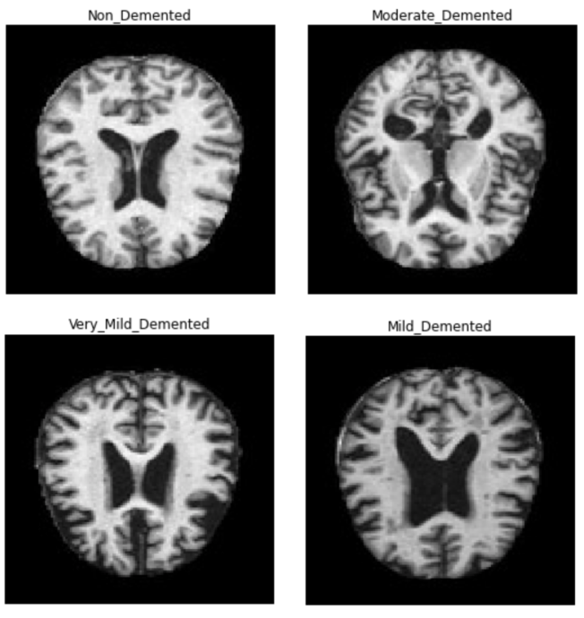

Dementia is the loss of thinking, remembering, and reasoning and behavioral abilities.
The aim of this project is to detect dementia by exploring the interactions between the features
collected from people who suffer from Dementia and healthy subjects.

Magnetic Resonance Imaging (MRI) scans are used to acquire detailed images of the brain.
This is important for research into dementia as it can reveal how dementia affect in the
size of different areas of the brain. The aim of this project is to predict the severity
of Dementia using MRI brain image from brain.
Sentiment analysis of reviews will identify the emotional tone behind the review, whether data is positive, negative or neutral.
The aim is to measure the intensity of the sentiments generated from the customer reviews and analyze the association between customer
reviews and rate given by customer.
More than four out of five Cardiovascular deaths are due to heart attacks and strokes. Heart attack treatment works best
when it's given right after symptoms occur. The aim of this project is to predict heart attack based on patients attributes
and medical data of patient
In order to develop my expertise in machine learning and deep learning, I enrolled in a 600-hour online course in
Sprinboard bootcamp that covers Machine Learning, Recommendation Systems, Time Series Analysis and Social Network Analysis
in Python. These case studies include Exploratory Data Analysis,Linear & Logistic Regression, Time Series Analysis,
Recommender Systems, Naive Bayes, Customer segmentation using clustering,and MapReduce with Spark